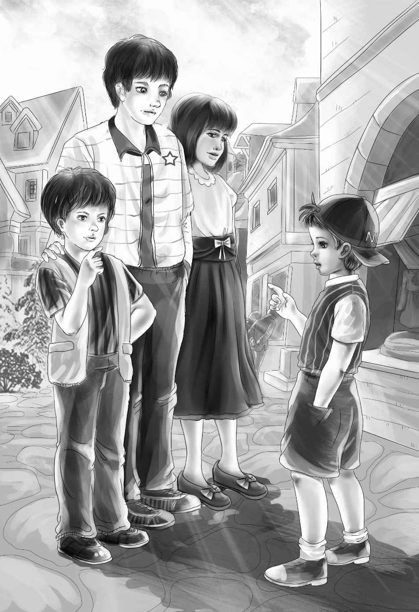

The ranch belonged to the four Alden children. So,of course,they wanted to see how it had changed since last summer when uranium had been found.
Benny said,"I suppose Grandfather had to get hundreds of miners to work in the uranium mine. And the miners have lots of children,and they must have clothes and something to eat,and a school and a church. So that's how the town grew. "
"Right!" said Henry with a smile. "You have it all worked out. " The four children went out the back door.
"Yes,Watch,you can come," said Henry to the dog. "Can Lady come too,Aunt Jane?"
"No," said Aunt Jane. "Lady always stays with me. "
Watch was delighted to go with the four children,so he barked and barked. He ran along barking. On they went,past the hen houses. These were all mended and painted. They went through a field to the street. It was very strange to see a city street in the middle of the old field.
"There's a five and ten,"said Benny,"and a big super-market! We won't need to hoe any vegetables if we don't want to. "
"What a beautiful dress shop!" said Jessie. Then she almost bumped into a boy about Benny's age. He was walking with his hands in his pockets and he was whistling.
When he saw the children he stopped and stared at them. Then he said,"Hi,Ben!Don't you know me?"

Benny took one look. "Mike! Mike Wood!" he yelled. "It's Mike,Henry! Remember he came to the picnic on Surprise Island?"
"Well,I'd never forget that," said Henry. "It is Mike,sure enough! You came over to our picnic and your dog had a race with Watch. "
"Yep," said Mike. "That was my dog Spotty. He's out with my brother Pat now. I remember how he beat your dog in the race. "
"Oh,no!" cried Benny. "He never did! Watch was the one that beat Spotty! Don't you remember?"
"No,I don't," said Mike. "I know Spot beat Watch. "
"He didn't either!" shouted Benny. "Spot was a stranger. He didn't even know which way to run!"
"Stop,you boys," cried Henry. "Don't fight the minute you meet. "
"Well,Mike started it," shouted Benny.
"I did not! You started it," shouted Mike.
"Boys!"said Henry. "Stop this minute. Aren't you friends?"
"We're friends," said Benny,"unless Mike tells lies about Watch. Watch won that race and I won't give in for anybody. "
"Well,"said Mike,"maybe he did. But it wasn't a fair race,because Spotty didn't even know the way. "
"O. K. " said Benny. "That's all I care. If you say Spotty didn't beat. "
"Well,maybe he didn't beat," said Mike,"but how could he beat when he didn't know where to run?"
"Well,he couldn't,"said Benny. "That's what I said. He couldn't and he didn't. I never said it was a fair race. "
"Mike," said Jessie pleasantly,"how did you happen to come out here?You're so far from where we saw you last. "
"I know," said Mike. "But we like it here. My Uncle Bob invited us to live here when my father died. Uncle Bob said he could give Pat a job. Remember Pat? My big brother?"
"Oh,yes," said Henry. "He was the one who almost got drowned at the picnic. "
"Well,Pat works at the mine for my Uncle Bob. Not in the mine,but outside. I do all sorts of work for the mine,too. We all work. Mother washes the miners' clothes. "
"Where's your house?" asked Henry.
"Over there,"said Mike,pointing. "That pink one. The houses are all alike,only different colors. Each house has a yard around it,but the grass is dry and brown. My house has an electric stove and a washing machine. It's different from our old house back home. Come and see my mother. "
"All right," said Henry. "We'd like to. "
"Pat isn't home,but my mother is,"said Mike. "She is making a pie,maybe,and we could have some to eat. "
They reached the door of the pink house. "Ma,look who's here!" said Mike.
Mrs. Wood was indeed making pies. She was taking the third pie out of the oven. When she looked up and saw Benny,she laughed out loud.
"Hello,Benny Alden!" she cried.
"You have never seen the rest of us," said Jessie,laughing. "But you have seen plenty of Benny,when he went to school with Mike back in the East. "
"I've heard lots about you," said Mrs. Wood. "Benny is a great talker. He's a fine boy. It does Mike good to play with him. "
"It does Ben good to play with me," said Mike loudly.
"Yes,I think it does," agreed Henry.
Mike looked up in surprise. He did not know what to say. He thought Henry would not agree with him. "Ma makes pies for the neighbors," he said.
"And you are surely neighbors,"said Mrs. Wood at once. "So take your choice. I have cherry,apple,and blueberry pie. All hot. " She began cutting the three pies. The smell was delicious and the pie crusts were brown and flaky.
"I didn't really have much lunch," said Benny.
"Pull up your chairs around that table," said Mrs. Wood. "And Mike,you get a bit of cheese out of the refrigerator. "
"Where's Pat?"asked Mike,getting the cheese.
"Gone to the bank. It's pay day. He puts Uncle Bob's money in the bank every week. You go get him,Mike,and tell him to come home and see the company. "
Mike ran off down the street. Mrs. Wood watched him with a smile.
"He's not a bad boy,is Mike,"she said. "He's just a big talker. "
"We know that," said Jessie,smiling too.
"He'd do anything for his friends," said his mother. "He helps the men at the mine a lot,even if he fights,too. They joke with him and argue with him,but they like him. "
Henry said,"This is the best apple pie I ever ate. "
"I agree," said Jessie. "The cherry must be even better than the apple. "
Violet laughed softly. "I was going to say the same thing about this blueberry. "
"I'm glad," said Mrs. Wood very quietly. "I love to bake pies the best of anything. I wish I had time. "
"Haven't you time?" asked Jessie,puzzled.
"No,dear," said Mrs. Wood. Her voice sounded sad. "I wash all day to earn money to help keep us. I'm lucky to have a washing machine. Here's Pat now. "
When Pat came in,he said at once,"Hello,Ben! You used to come down to our house and play with Mike. "
"This is Jessie," said his mother. "This is Violet,and this is Henry. "
"Oh,I know them all," said Pat. "They saved my life on that picnic. "
"Our cousin Joe did that,"said Henry. "He is a fine swimmer. "
Then Mike said,"When I met Pat,he was just coming out of the bank. "
"It seems too funny to have a bank here," said Jessie. "This whole place used to be great fields of long grass. "
"We have almost everything," said Pat. "We have a newspaper every day. The newspaper office is right by the bank. "
"Oh,yes," cried Benny. "I saw the paper up at Aunt Jane's. The Daily News. It had a big picture of the uranium mine buildings on the front page. "
"Yes,the mine is almost always on the front page," said Mike. "Here it is. We saved this one,because Pat is in the picture. See,right there? That's Pat. Standing by the short man. Gosh,that's funny. I've seen that man before some place. He don't live here. "
"Doesn't," said Pat.
"Well,doesn't,then," said Mike. "You say Don't to me often enough. "
"That's very different,Mike," said Pat.
"Well,it don't sound any different to me," said Mike.
Jessie laughed. "Mike makes me think of Benny,sometimes," she said. "They both love to argue. "
"I'm not arguing," said Mike. "I'm thinking. That short man in the picture don't—doesn't—live around here. He's a stranger. But I know I've seen him before. "
Pat looked at the picture. "I don't remember him at all," he said to his younger brother. "I didn't even know when they took the picture. "
Mike was very quiet for a while. He kept looking at the picture.
"We must go," said Jessie. "We want to go into every store on the street and see all the sights. "
"I'll go with you," said Mike. "I can show you everything. I've been here two months. "
It was true. Mike did know everything. He showed them the door of the super-market which opened all by itself. He showed them a garage where new cars were for sale. Jessie bought five big straw hats in one store. The sun was very hot,so they all put on the hats. Everyone in the stores seemed to know who the children were. Aunt Jane had put their pictures in the paper many times since they owned the ranch where uranium had been found.
At last Jessie said,"Come on,let's go home. Maggie said she had a fine supper. "
"Thank you,Mike,for showing us," said Violet.
"See you tomorrow,Mike," said Benny.
"Yep," said Mike. He went off whistling. He didn't know then that tomorrow would be so exciting.